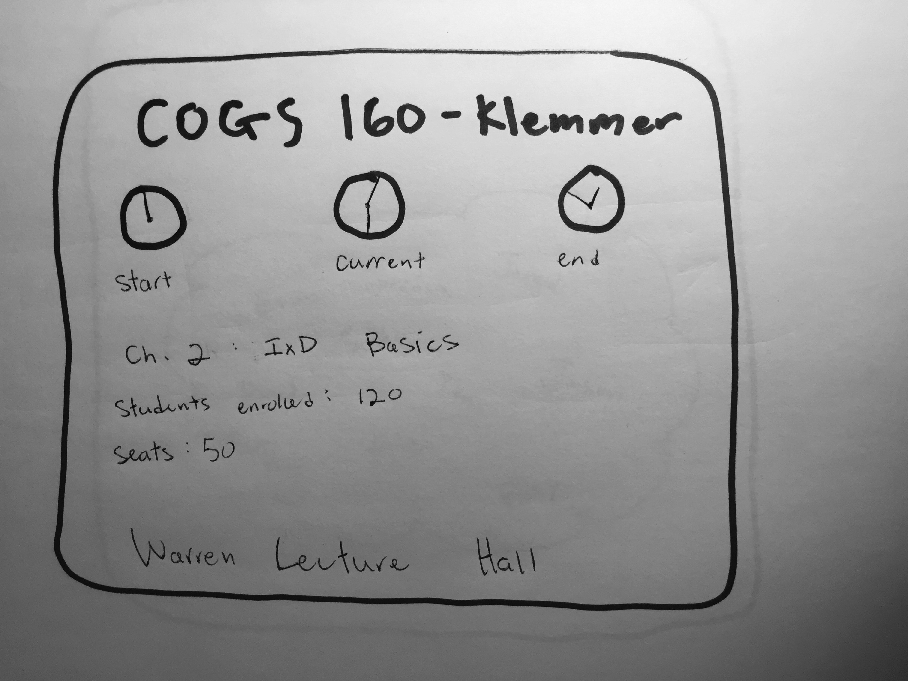
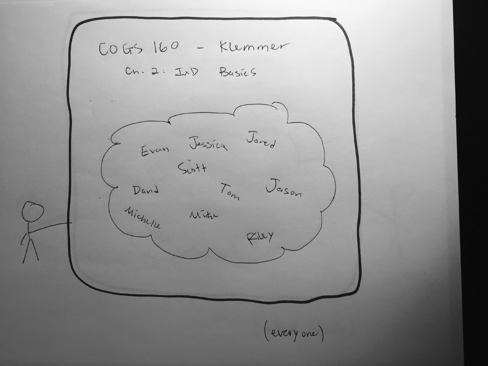
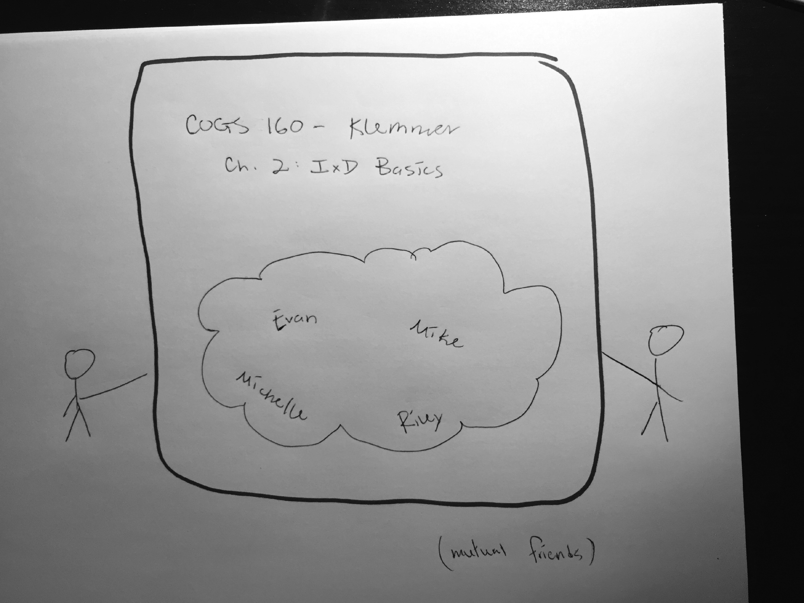

Persona: John is a student-athlete who is constantly late to class because of practice, weights, etc. He likes to sit near friends because they help him with content he may have missed in class. But it is often hard to find friends in his classes because so many seats are already filled up and lecture has often already started. He needs a system that will help him locate the people he knows and connect him with the content he may have missed to keep him on track with his course work.
PDF:




